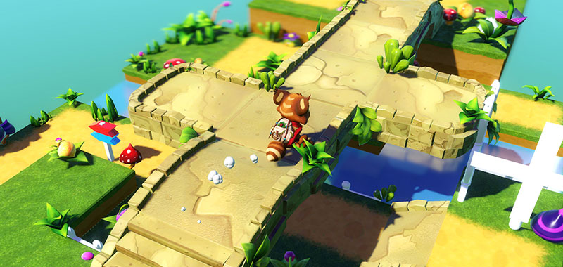

Godot3游戏引擎入门之零零：简单的想法

一、缘由
今年 7 月份，也就是上个月，惊奇的发现世界上存在着这么一个小巧灵动的游戏引擎： Godot Game Engine ，图标非常可爱另类，研究了一番，现在已经是 3.0 的版本（目前是 3.0.6 ），看官方新闻，最新版 3.1 正在紧张有序的开发中，据说会有重大突破，期待。 :joy:
这个游戏引擎虽小，但是真的是五脏俱全：支持 Window/Mac/Linux 主流操作系统，支持普通的 2D 和 3D 游戏开发，支持 Android/iOS/Blackberry OS 等主流手机平台，以及 XBox/Steam/GameRoom 等其他游戏平台的发布，当然 WebGL 也不在话下。你可以到官方网站下载直接运行文件， Mac 也可以通过 brew cask install godot 安装，最大不超过 100M ，最低 20M ，但功能可谓是非常齐全啊。

令人惊喜的是，他是开源的！开源的，没错，你没有听错，早在四年前就已经开源了，哇哦~不过，不好意思，四年前我连如日中天的 Unity3D 是啥都不知道呢。去年底有机会接触并学习了一段时间的 Unity3D 游戏开发后，还是蛮喜欢这个游戏开发引擎的，但是现在我发现作为游戏开发爱好者菜鸟的我， Godot 更适合我，为啥？请听我慢慢道来：
- 小巧开源，社区驱动，下载后无需安装，开箱即用，官方插件也齐全
- 惊喜的 2D 游戏开发界面和 GUI 元素，适合新手，打开程序即可轻松上手游戏开发
- 一切基于 Node ，想添加任何元素都是极其 Easy ，甚至 2D 和 3D 以及 GUI 元素混用都没关系
- 每一个 Node 元素只能添加一个 Script 脚本进行控制，这太符合是我这类有一点点 Adobe Flash 开发经验的朋友了
- 如果深入点，它的流程设计，帮助文档，资源加载，一切可以基于场景进行设计，等等，都非常直接、非常贴切啊
~
当然，学习曲线平缓也是我喜欢这个游戏引擎的另一个重要原因。这就是我接触 Godot 没超过两周的感受吧，当然还有更多更多的优点等着去挖掘和探索的，官方对此也列举了 Godot 平台的几乎所有的特性及优点，大家可以在此查看： Godot Features
总之，就是这么一个五脏俱全、小巧玲珑的开源的游戏开发引擎让我爱不释手，我决定“冒天下之大不韪”对 Godot 进行个人方面的努力宣传尝试，为开源界也算是贡献我的一份渺小的力量吧。哈哈。 :joy:
二、内容
因为自己对游戏开发也几乎是完全从 0 开始，目前有没有入门都还处于不确定阶段，我肯定不能进行一些深入的探讨，但是基础的部分我会边学习边记录下来，作为小专题来和喜欢 Godot 的朋友们一起讨论研究。
关于内容的话，我初步给自己定了一个目标，找了些资料和书籍，主要基于 2D 游戏开发，参考了《 Godot Engine Game Development in 24 Hours, Sams Teach Yourself: The Official Guide to Godot 3.0 》这本书后，我把内容简单的列表如下：
- Godot 游戏引擎的介绍和安装、以及相关的资源
- Godot 的场景系统介绍和使用
- 2D 图形相关元素和操作
- GDScript 脚本介绍和使用
- 用户输入 Input 相关
- 游戏物理引擎
- 动画的使用
- 简单的开发流程探讨
- 文件系统和项目管理
- 声音和粒子系统
- 视口和 GUI 界面元素
- 网络相关
- 最后可能会探讨一下 Native 脚本吧
- 其他……
好吧，这真是画了一个好大的饼啊……希望自己跪着也能吃完吧，哈哈。 :joy:
三、其他
啰嗦了一大堆，大家肯定会问：凭什么要上船呢？特别是很多朋友可能有其他游戏引擎的开发经验，比如国内如火如荼的 Unity 3D ，还有大名鼎鼎的老资格 Unreal Engine ，以及游戏画面闻名的 Cry Engine 等等，还有手机上著名的 SpriteKit 框架，以及开源跨平台的 LibGDX 或者 Cocos2d-x 游戏框架经验，等等，话说最近开源的 Xenko 又是个什么梗？我想说，凭我的软文还不够大家上船，那么先来两篇文章安利一下大家吧：
- 这里有一位国外大“屌”开发者，谈了他对 Godot 和自己多年 Unity3D 游戏开发经验的一些比较和看法，我觉得蛮有参照价值的，参考网址：
Here is my personal opinion about Godot vs Unity
https://news.ycombinator.com/item?id=16674933）：
- 还有一个位大神，在去年底 Medium 上发了一篇文章，也是关于为什么选择 Godot 的原因，原文太长了，参考网址：
Why we choose Godot Engine
https://medium.com/@rockmilkgames/why-godot-engine-e0d4736d6eb0
我感觉自己要翻译一下这两篇文章了，因为阅读这些英文有点浪费时间，我也并没有足够的说服力来让大家趟坑 Godot ，哈哈。那么，可能下篇见吧。 :sunglasses:
我的博客地址： http://liuqingwen.me ，欢迎关注我的微信公众号：